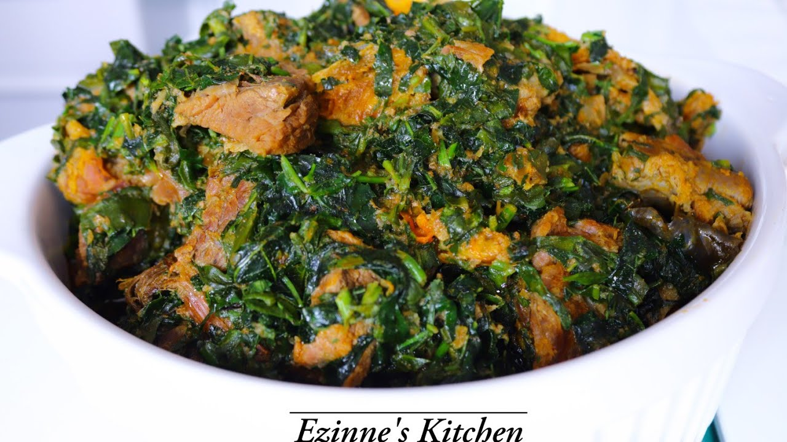
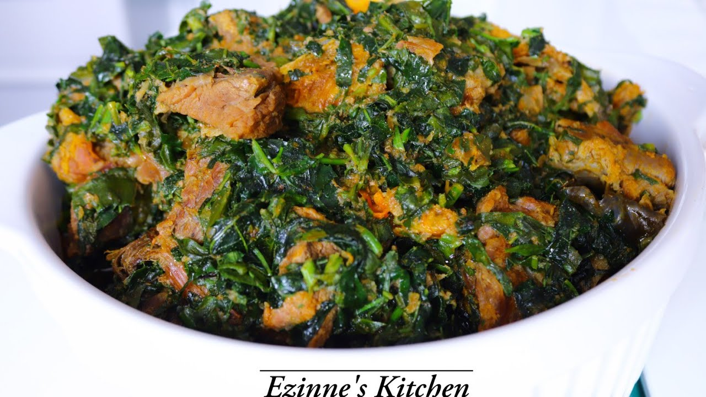
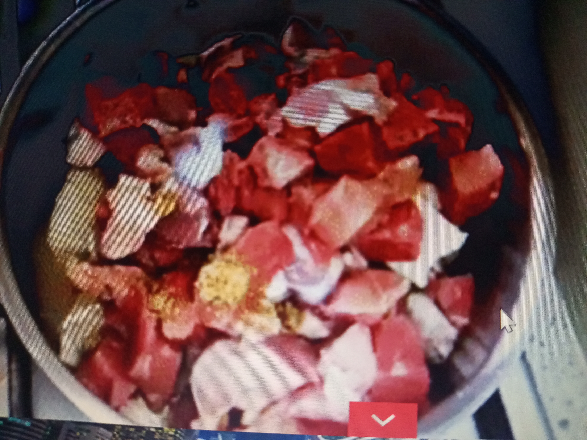
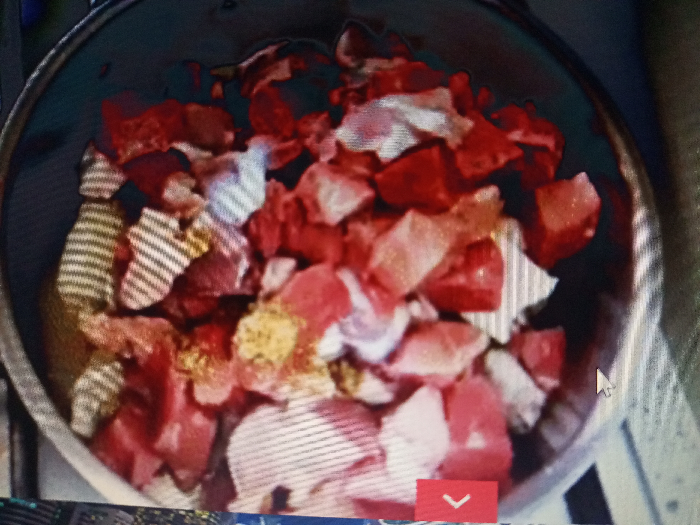

- Rich in antioxidants
The leaves of Telfairia occidentalis also contain chemo-suppressive properties, including chlorophyll, phenolic compounds, saponins, tannins, flavonoids, glycosides, and phytosterols - all of which help in fighting against cancer.
- Protects the liver
The leaves of fluted pumpkins have hepatoprotective properties or liver-protecting abilities. They contained powerful polyphenols which might protect the body from liver damage. Hence, eating vegetable soup might be good for the liver.
- Promotes healthy skin and hair
For healthy skin and hair, vitamins A and C are required in the body system. Hence, consuming ugu regularly provides you with healthy hair and skin.
- Boosts blood production
Vegetable soup is recommended for patients who suffer from a shortage of blood. The leaves have often been used by traditional healers to increase blood production. Because of the presence of iron and other nutritional components, it contributes to boosting blood in the body system.
- Improves digestive health
Vegetable soup is one of the healthy Nigerian foods that are good for the digestive system. They are rich in fibre, which promotes healthy digestion and supports good bowel movement.
- May help in the treatment of convulsions
Ugu leaves might be useful in treating convulsions. it has been discovered that leaf extract of Telfairia occidentalis possesses anticonvulsant and muscle relaxant properties. This means that it might be effective in treating convulsion in children.
- Reduces stress
Yes! Eating vegetable soup can help you relax and help reduce stress. Fluted pumpkin leaves possessed anxiolytic and sedative properties. That means they can be used to reduce anxiety and relax. Thus, a plate of vegetable soup can help you destress after a hectic day.
- Good for weight loss
Naturally, vegetables have little or no calories, which makes them effective for weight management. Hence, vegetable soup helps you to lose weight by eliminating the chances of storing calories in the body. Furthermore, they are rich in dietary fibre and protein, which help you feel fuller and eat less.

 


 
